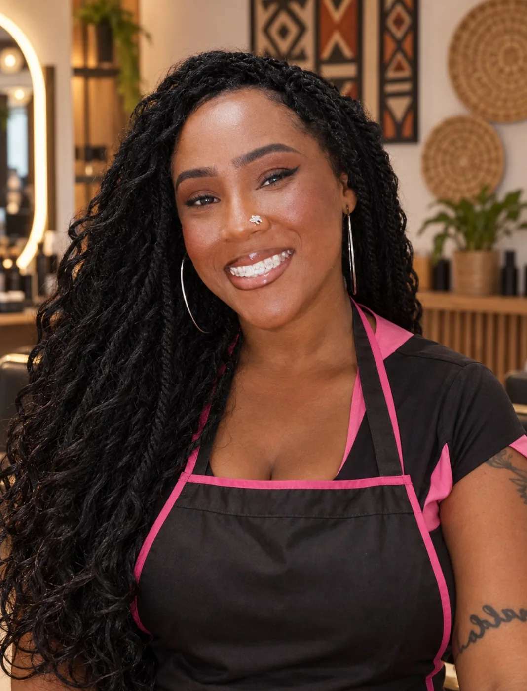
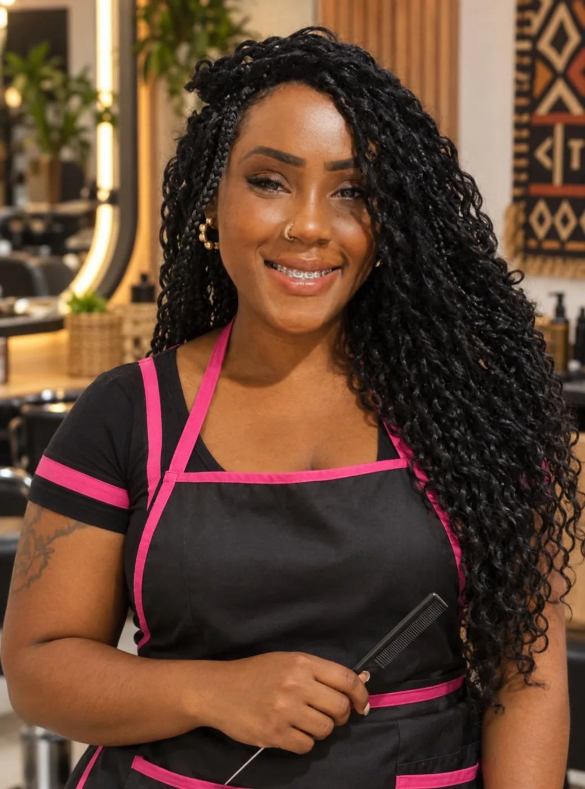
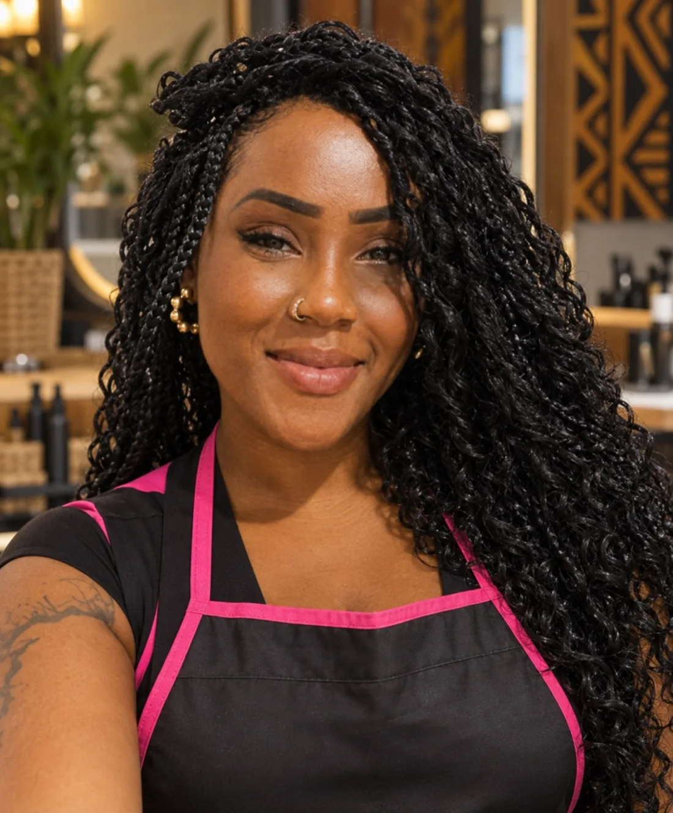
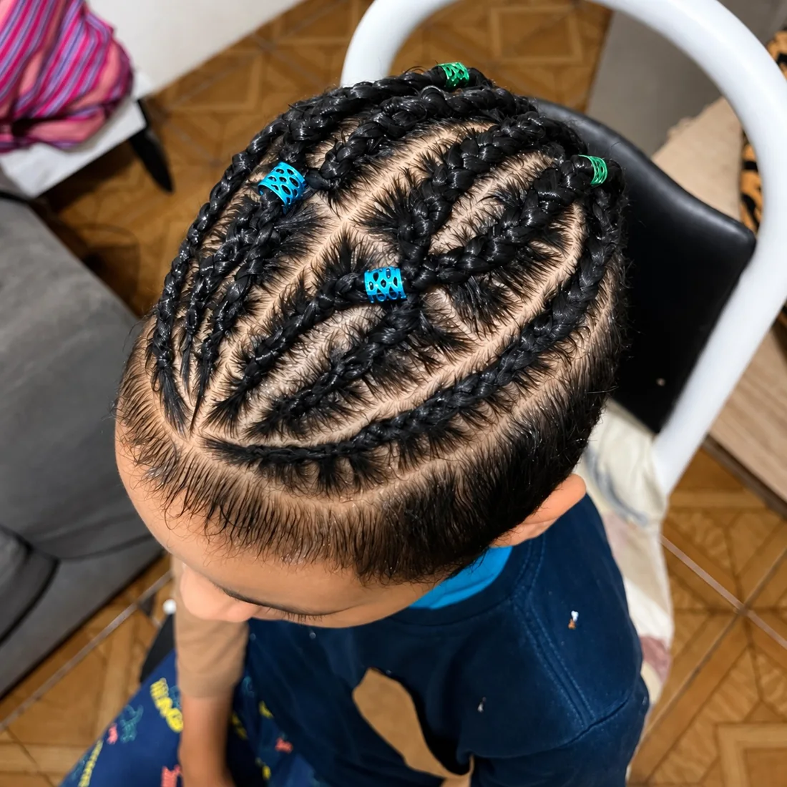
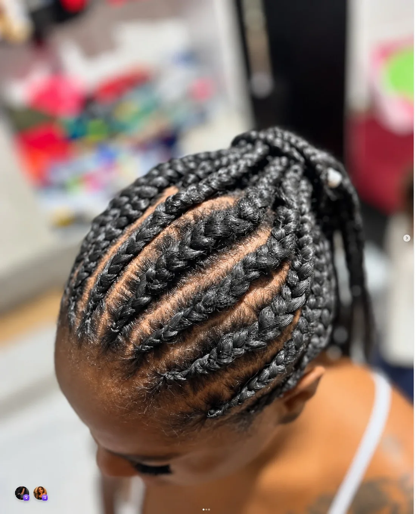
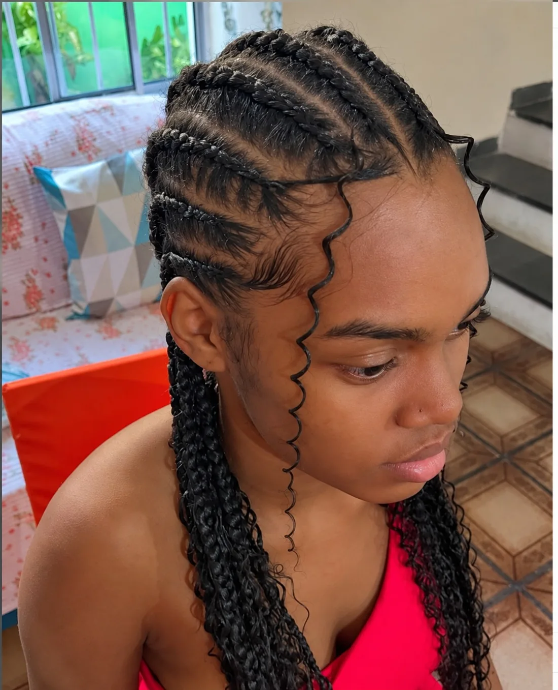
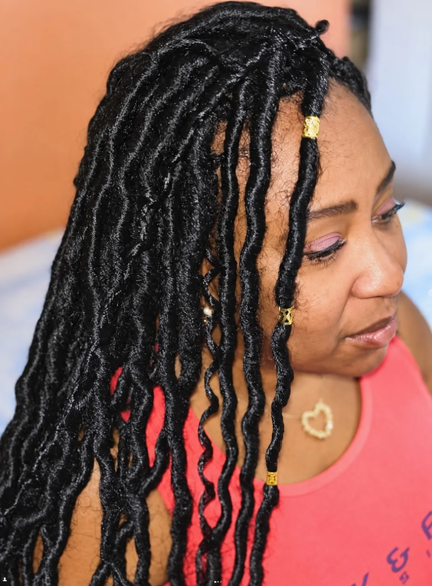
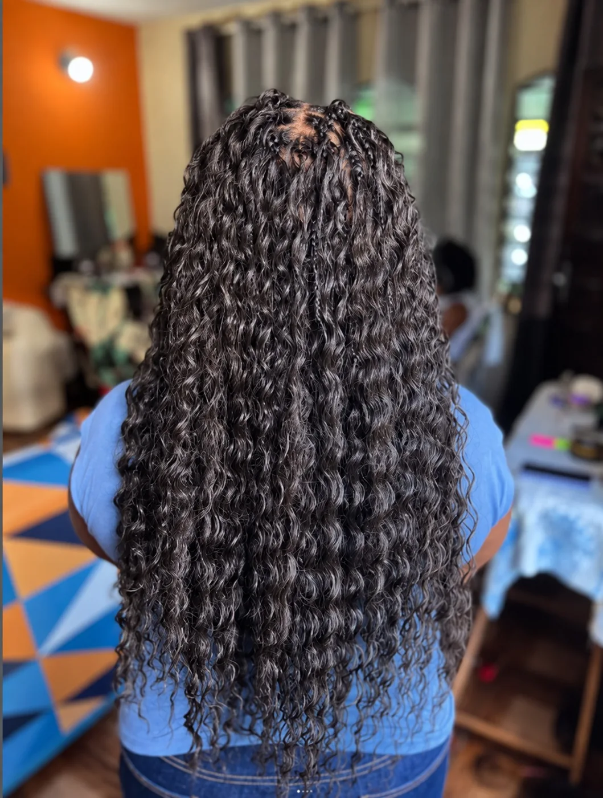

Tranças.
Identidade.
Atitude.
Seu cabelo pode dizer muito sobre você. Encontre o visual que combina com a sua expressão.

Arte em cadatrançado.Evellyn Guimarães TRANCISTA · @EVYGBRAIDS
Conheça a profissional
Prazer, Evellyn.
Evellyn Guimarães é trancista e o nome por trás da Evy Braids. Seu portfólio reúne desenhos na raiz, diferentes texturas e comprimentos que valorizam a expressão de cada pessoa.
Retratos criados com IA a partir das fotos de Evellyn.

Portfólio
O desenho faz a diferença.

Nagô desenhada
Curvas que lembram um coração, com acessórios azuis e verdes. O desenho acompanha a raiz.

Nagô em curvas
Linhas curvas conduzem as tranças para a parte de trás. A divisão define o acabamento.

Raiz marcada.
Mechas soltas.
A nagô se combina ao comprimento e a mechas onduladas junto ao rosto. O contraste entre o desenho da raiz e os fios soltos cria movimento.
Envie esta referência ao pedir orçamento.Mais formas de se expressar.

Locs com acessórios
Mechas de aparência cilíndrica e textura encorpada, com detalhes dourados. O efeito lembra faux locs, que podem ser construídos com extensões.
Leitura provável: faux locs. Material e aplicação devem ser confirmados com Evellyn.
Comprimento ondulado
Ondas e cachos predominam no comprimento. Pequenas bases aparecem no topo, enquanto os fios soltos destacam o volume visto de costas.
Pode lembrar boho/goddess. A técnica exata não fica clara na foto; use-a como referência.Escolha a sua referência.
Antes de marcar
Tudo começa na conversa.
Como peço um orçamento?
Envie no Instagram a referência escolhida, comprimento, cor, uma foto atual do seu cabelo e a data desejada.
Quanto custa e quanto tempo leva?
Valor e duração dependem do modelo, comprimento, quantidade de tranças e materiais. Consulte Evellyn.
Preciso levar o material?
Confirme se a fibra e os acessórios estão incluídos. Combine também como preparar o cabelo antes de ir.
Como cuido depois?
Peça orientações de lavagem, secagem, proteção ao dormir, manutenção e retirada para a técnica escolhida.